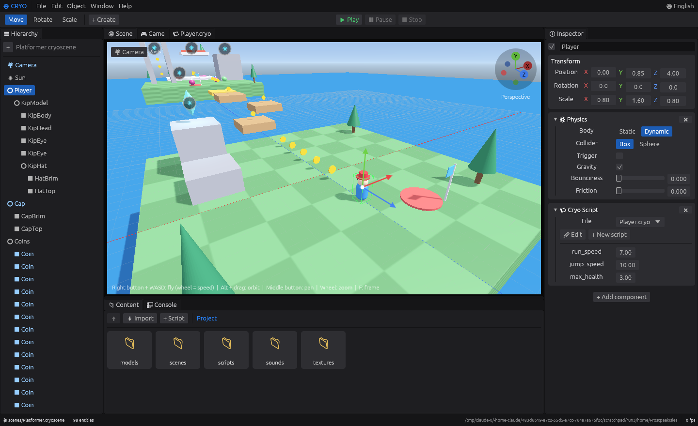
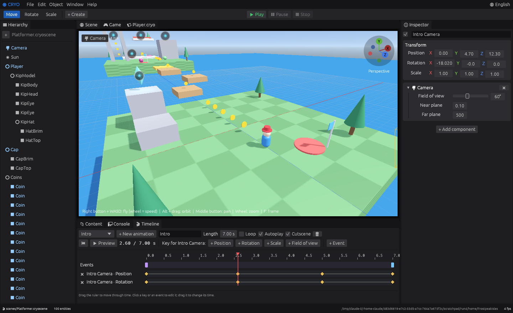
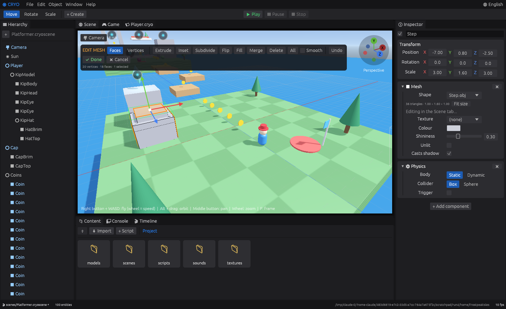
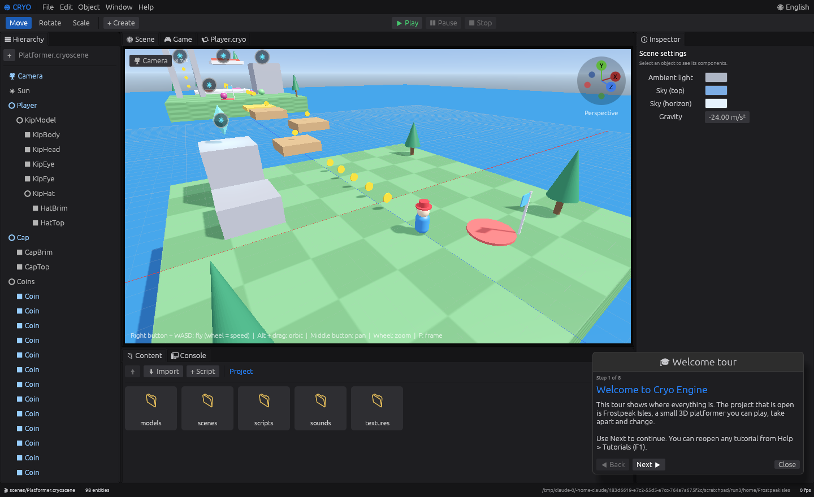
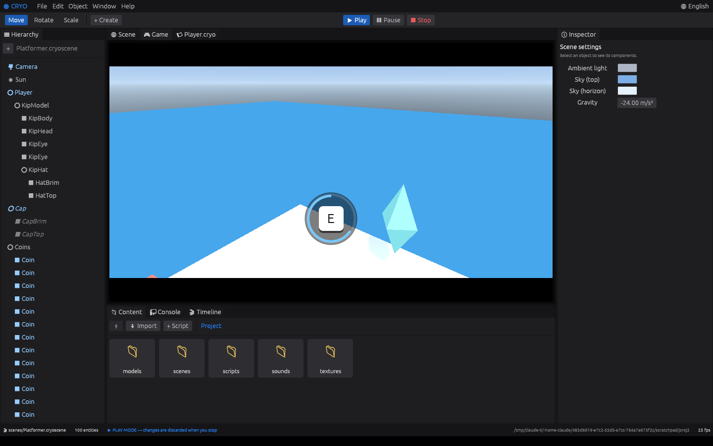
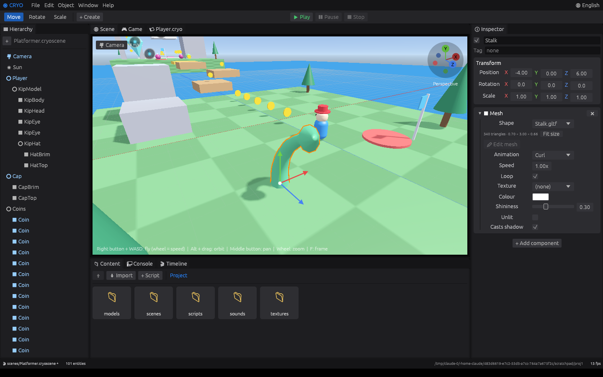
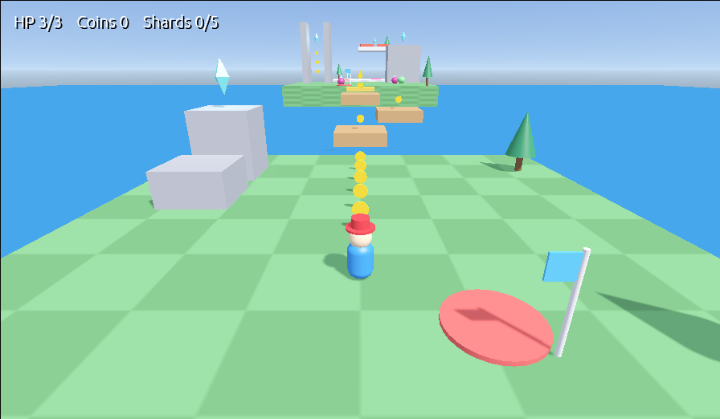
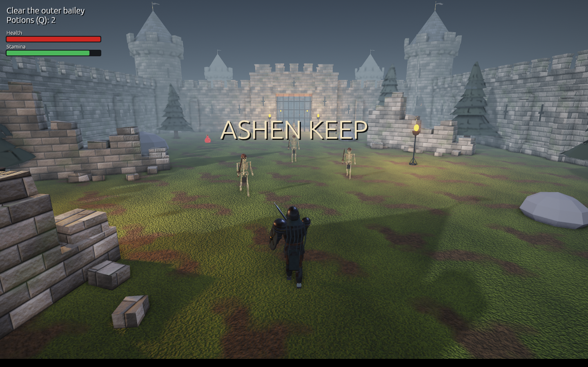
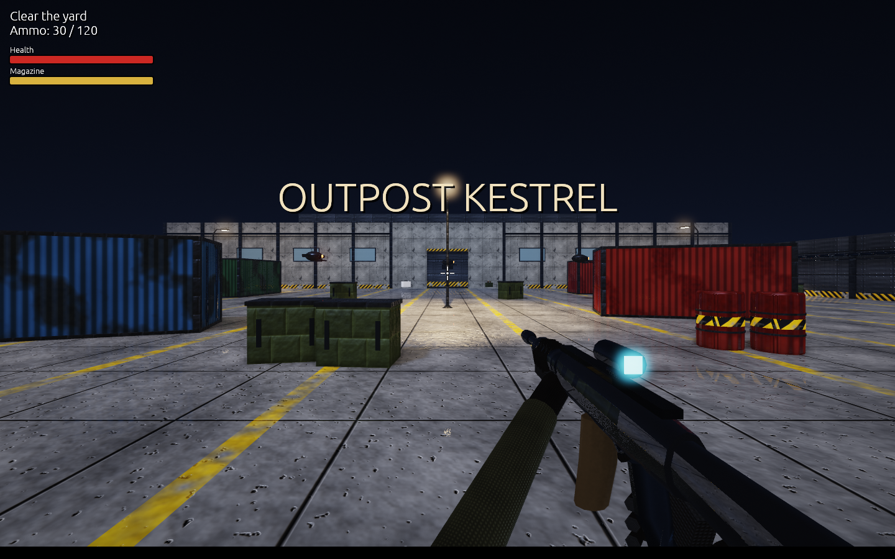

Cryo Engine
A native 3D game engine with a Unity/Unreal-style visual editor. Games are written in Cryo, a small scripting language designed to be easy to read and hard to break.

Download and install
Get the zip for your system from the Releases page, unzip it and run the editor. There is nothing to install.
| System | How to start |
|---|---|
| Windows 10/11 | Double-click cryo.exe. |
| macOS 11 or later | Right-click Cryo Engine.app and choose Open the first time (the app is not signed). |
| Linux (x86_64) | Run ./cryo in a terminal. |
On first launch the editor creates the example project in ~/CryoProjects/FrostpeakIsles and starts the welcome tour. Editor settings are kept in ~/.cryo-engine/settings.json.
CRYO_MSAA=0.First steps
- Follow the welcome tour that opens on first launch. It takes about two minutes.
- Press ▶ Play (Ctrl+P) and try the example game. Esc stops it.
- Select Player in the Hierarchy and change
jump_speedin the Inspector. Play again. - Open
scripts/Coin.cryofrom the Content tab and read it: it is twenty lines. - Use + Create to add a cube, give it Physics and a new script, and make it do something.
To start your own game, choose File > Open or create project and pick an empty folder.
The interface is in English by default. Portuguese is available from the 🌐 menu in the top-right corner.
The interface
| Panel | What it is for |
|---|---|
| Hierarchy | Every entity in the scene, as a tree. Drag one onto another to parent it. Right-click to duplicate or delete. |
| Scene | The 3D workspace: select by clicking, move/rotate/scale with gizmos, navigate with the editor camera. |
| Game | What the game camera sees. In Play mode it receives the keyboard and mouse. |
| Inspector | Transform and components of the selected entity. With nothing selected, the scene settings. |
| Content | Project files. Double-click opens scripts and scenes, places models and applies textures. |
| Console | Output of log(...) and script errors with line numbers. |
| Script editor | Syntax highlighting and error checking as you type. |
Every panel is a tab that can be dragged and re-docked. Window > Reset default layout puts everything back.
Shortcuts
| W E R | Move, rotate and scale tools |
| Ctrl+P / Esc | Play / stop |
| Ctrl+S | Save the scene and the open script |
| Ctrl+Z / Ctrl+Shift+Z | Undo / redo |
| Ctrl+D / Del | Duplicate / delete the selection |
| F1 | Tutorials |
On macOS use Cmd instead of Ctrl. Stopping the game restores the scene to how it was before Play.
Camera controls
All options are in the 🎥 Camera menu in the top-left corner of the Scene tab.
| Action | Mouse | Trackpad gestures mode |
|---|---|---|
| Orbit | Alt + drag | two fingers |
| Pan | middle button drag | Shift + two fingers |
| Zoom | wheel, or Alt + right drag | pinch |
| Fly | hold the right button + WASD, Q/E down/up, Shift faster | |
| Flight speed | wheel while flying, or the Speed slider | |
| Walk without flying | arrow keys, PageUp/PageDown | |
| Frame selection / everything | F (or double-click an object) / Home | |
| Perspective / orthographic | O | |
| Axis views | click X, Y or Z on the orientation gizmo (top right): Front, Right, Top and their opposites | |
| Bookmarks | Ctrl+1…4 save, 1…4 recall | |
| Align game camera to view | Ctrl+Shift+F | |
Trackpad gestures are on by default on macOS. Field of view and smooth movement can be changed in the same menu.
Entities and components
A scene is a tree of entities. Each has a name, a transform (position, rotation in degrees, scale) and any of these components:
| Component | Settings |
|---|---|
| Mesh | A primitive (cube, sphere, plane, cylinder, cone, capsule) or an imported model; texture, colour, shininess, unlit, casts shadow. |
| Light | Directional, point or spot; colour, intensity, range, cone angle, shadows. |
| Camera | Field of view, near and far planes. The first camera in the scene is the game camera. |
| Physics | Static or dynamic body; box or sphere collider; trigger; gravity, bounciness, friction. |
| Cryo Script | A .cryo file plus the values of its prop fields. |
Children follow their parent. Scenes are saved as readable JSON (.cryoscene), which works well with version control.
Importing assets
Drag files onto the editor window, or use ⬇ Import in the Content tab.
| Kind | Formats | Folder |
|---|---|---|
| 3D models | .obj (+ .mtl), .gltf, .glb | models/ |
| Textures | .png, .jpg | textures/ |
| Sounds | .wav, .ogg, .mp3 | sounds/ |
Files a model refers to (materials, .bin buffers, textures) are copied with it. An imported model is placed in front of the camera; if it was authored in other units, its scale is set to about 2 m. A model's box collider uses its bounding box and is drawn in green when selected.
Animation and cutscenes
The Timeline tab edits animation clips. A clip moves objects over time with keyframes and fires events at exact instants, which keeps sounds, script calls and camera cuts in sync with the motion. The same clips serve real-time animation (doors, lifts, effects) and cutscenes.

Keyframes
- Click + New animation and set its Length.
- Select an object and click + Position (or Rotation, Scale, Colour, Field of view) to record its current value at the playhead.
- Drag the ruler to another time, change the object in the Scene or the Inspector, and add another key.
- Press Preview to play it in the editor.
Click a key to edit its time, value and easing (Smooth, Linear or Step, which holds the value until the next key). Drag a key sideways to retime it.
Events on the timeline
| Event | What it does at that instant |
|---|---|
| Script event | Runs on <event>(argument) in the chosen object's script. |
| Sound | Plays a sound file from the project. |
| Camera cut | Switches the game to another camera. |
| Screen text | Shows text on the game screen. |
| Event for everyone | Runs on <event>(argument) in every script of the scene. |
| Quick time event | Shows a key prompt; the clip waits for the player's answer. See Quick time events. |
| Play animation | Starts another clip, to chain or branch cutscenes. |
| Game speed | Slow motion (0.3) or back to normal (1). |
Clip options
| Loop | Starts again when it reaches the end. |
| Autoplay | Starts by itself when the game starts. |
| Cutscene | Blocks the player's input and shows cinema bars while playing. Enter skips it, still firing its remaining events so the game ends up in the right state. |
From scripts
anim.play("Victory") // start (or restart) a clip
anim.stop("Victory")
if anim.playing("Intro") { return }
on animation_end(name) { // every script hears when a clip finishes
if name == "OpenDoor" { log("door is open") }
}
scene.set_camera(scene.find("Boss Camera")) // camera cut from codeEach key chooses how the value travels to the next one: Smooth, Linear, Step, Ease in, Ease out, Overshoot (passes the target and comes back) or Bounce.
Tracks store local values, so an animated object can also be a physics body: a static body moved by a clip pushes dynamic bodies out of its way.
Modelling
Edit Mesh mode lets you shape geometry inside the editor. Start it with + Create > Editable mesh, or select an object and click Edit mesh in its Mesh component. A primitive is first saved as an .obj in models/; imported .obj models can be edited too.

| Tool | Key | What it does |
|---|---|---|
| Faces / Vertices | What a click selects. Shift + click adds or removes. | |
| Move, Rotate, Scale | W E R | The gizmo acts on the selection. |
| Extrude | X | Pulls the selected faces outwards as one region, creating the sides. |
| Inset | I | A smaller face inside each selected face. |
| Subdivide | U | Splits the selected faces into quads; neighbours stay connected. |
| Flip | N | Turns faces inside out. |
| Fill | New face from three or more selected vertices. | |
| Merge | M | Joins the selected vertices at their centre. |
| Delete | Del | Removes the selected faces or vertices. |
| All | A | Selects everything, or nothing. |
| Smooth | Smooth shading instead of flat faces. | |
| Undo | Ctrl+Z | Steps back through the modelling session. |
Done (or Esc) saves the model; Cancel restores it. Texture coordinates are generated by box projection (one tile per unit), and the box collider follows the new bounds.
Built-in tutorials
Open Help > Tutorials (F1). Each tutorial is a short sequence of cards; the panel a step talks about is brought to the front and outlined.

| Welcome tour | Where everything is. |
| Moving the camera | Fly, orbit, zoom, axis views, bookmarks. |
| Building a scene | Create, transform, parent, duplicate, save. |
| Importing models, textures and sounds | Bringing your own assets. |
| Scripting with Cryo | Events, props, talking to other objects, errors. |
| Physics and collisions | Bodies, colliders, triggers, contact events. |
| Inside the example platformer | How Frostpeak Isles is built. |
| Animation, cutscenes and timed events | Keyframes, events in sync, cutscenes, timers. |
| Modelling in the engine | Edit Mesh mode and its tools. |
| Events and quick time events | Events between scripts, engine events, QTEs, state machines. |
| First person and animated models | The first-person player, skeletal animation, mesh colliders. |
| Exporting your game | From project to something people can run. |
The Cryo language
Each .cryo file defines one script. Attach it to an entity with the Cryo Script component.
script Player {
prop speed: num = 6 // editable in the Inspector
var coins = 0 // internal state
on start() { // once, when the game starts
hud("Coins: 0")
}
on update(dt) { // every frame
var v = self.velocity
v.x = input.axis("horizontal") * speed
if input.pressed("space") and self.grounded {
v.y = 8
}
self.velocity = v
}
on coin() { // your own event: other.send("coin")
coins += 1
hud("Coins: " + coins)
}
fn double(x: num) -> num {
return x * 2
}
}Syntax
| Types | num, bool, text, vec3, entity, list, map, any. Annotations are optional; when present they are checked. |
| Fields | prop name: type = value (shown in the Inspector) and var name = value. |
| Locals | let (immutable) and var (mutable). |
| Control flow | if / else if / else, while, for i in 0..10, for item in list, for key in map, break, continue, return, match. |
| Operators | + - * / %, == != < <= > >=, and or not, += -= *= /=. + joins text with anything. |
| Vectors | vec3(x, y, z); + - between vectors, * / with a number; components .x .y .z can be read and assigned. |
| Lists | [1, 2, 3], list[i], .push(x) .pop() .remove(i) .contains(x) .clear() .len() .insert(i, x) .index_of(x) .first() .last() .sort() .reverse() .join(sep) .copy(). |
| Maps | { coins: 3, "red key": true }; read and write with m.coins or m["red key"] (a missing key reads as nil); .has(k) .get(k, default) .remove(k) .keys() .values() .len() .clear() .copy(). |
| Text | "..." with \n; text[i], .len() .upper() .lower() .contains(s) .starts_with(s) .ends_with(s) .find(s) .sub(from, count) .split(sep) .replace(a, b) .trim(). |
| Comments | // to the end of the line. Semicolons are optional. |
match
match other.tag {
"coin", "gem" => score += 1 // several values, one statement
"spike" => {
lives -= 1
respawn()
}
else => return
}State machines
A script can be split into states. It is in one state at a time; each state has its own events, on top of the script's. The first state declared is where it starts, and goto switches.
script Guard {
prop sight: num = 8
var player: entity = nil
on start() { player = scene.find("Player") }
state patrol {
on enter() { self.color = vec3(0.3, 0.8, 0.4) }
on update(dt) {
self.rotate(vec3(0, 40 * dt, 0))
if self.distance_to(player) < sight { goto chase }
}
}
state chase {
on enter() { self.color = vec3(1, 0.3, 0.3); emit("alarm") }
on update(dt) {
self.look_at(player.position)
self.translate(self.forward * 3 * dt)
if state_time() > 5 { goto patrol } // gives up after 5 seconds
}
on exit() { log("lost the player") }
}
}on enter() and on exit() run when the state begins and ends. current_state() gives its name and state_time() the seconds spent in it. goto also ends the event that called it.
Safe by default
- A
letcannot be reassigned, and conditions must bebool: there is no implicit truthiness. - Division by zero, an index outside a list, and reading a member of
nilare errors with a line number, not silent bad values. for item in listiterates without indexes, so off-by-one mistakes cannot be written.- A runaway loop or deep recursion is stopped automatically instead of freezing the editor.
- A script that fails is disabled on that entity; everything else keeps running.
Events
| Handler | When it runs |
|---|---|
on start() | Once, when the game starts. |
on update(dt) | Every frame. dt is the time in seconds since the previous frame. |
on collide(other, normal) | Every frame two physics bodies touch (triggers included). normal points from other towards this entity: normal.y near 1 means you are standing on it. |
on touch_start(other), on touch_end(other) | Once when two bodies begin to touch, and once when they separate. The simple way to know who is inside a zone. |
on key_down(key), on key_up(key) | When a key or mouse button is pressed or released. |
on animation_end(name) | When an animation clip finishes (sent to every script). |
on qte_success(name), on qte_fail(name) | The result of a quick time event. |
on anything(args...) | Your own events, fired with entity.send("anything", args...). Delivered right after the current event finishes. |
Handlers may declare fewer parameters than the engine sends: on collide(other) is fine.
Talking to other scripts
entity.send("event", args...) | To one object. |
emit("event", args...) | To every script in the scene that declares on event(...). The sender does not need to know who listens. |
scene.tagged("enemy") | The list of entities with that Tag (set in the Inspector, or self.tag = "enemy"). |
global.name | Values shared by all scripts: global.score += 1. A global never set reads as nil. |
// Lever.cryo
on touch_start(other) {
if other.tag == "player" { emit("open_doors", "blue") }
}
// Door.cryo: every door in the scene hears it
on open_doors(colour) {
if colour == my_colour { anim.play("OpenDoor") }
}Engine API
Entities
self is the entity the script is attached to. Any entity value offers the same members.
| Member | Type | Notes |
|---|---|---|
name, tag | text | |
parent | entity | Read-only; nil at the top level. |
animation, animation_time | text, num | Read-only: the skeletal clip playing on a rigged model. |
position, rotation, scale | vec3 | Local values; rotation in degrees. |
forward, right, up | vec3 | Read-only directions. Forward is local -Z. |
visible | bool | Hidden entities (and their children) are not drawn and do not collide. |
color | vec3 | Mesh colour, each channel 0 to 1. |
velocity | vec3 | Needs Physics. |
grounded | bool | Read-only: standing on something this frame. |
trigger | bool | Whether the body is a trigger. |
fov | num | Cameras only. |
| Method | Effect |
|---|---|
translate(v), rotate(v) | Add to position / rotation. |
look_at(point) | Turn so forward points at a position. |
distance_to(entity) | Distance between two entities. |
send("event", args...) | Run on event(...) in that entity's script. |
child("Name"), children() | A direct child by name (or nil), and the list of children. |
animate("Clip"), animate("Clip", speed) | Play a clip of a rigged model, blending from the current pose. animate("Clip", speed, false) plays it once and holds the last pose. animate("") returns to the rest pose. |
destroy(), exists() | Remove at the end of the frame / check it is still there. |
add_physics("dynamic"|"static", "box"|"sphere") | Give a spawned entity a body. |
Globals
input | .down(key) held, .pressed(key) / .released(key) this frame, .axis("horizontal"|"vertical") from WASD and arrows, .mouse_dx, .mouse_dy, .scroll, .lock_mouse(true|false), .mouse_locked.Keys: letters, digits, space, enter, shift, escape, tab, up down left right, mouse_left mouse_right mouse_middle. |
scene | .find("Name") (entity or nil), .all(), .tagged("tag"), .path(from, to) (corner points around obstacles, or nil), .spawn("cube", position), .destroy(entity), .set_camera(entity). |
anim | .play("Clip"), .stop("Clip"), .playing("Clip"). |
after, every, cancel | Timers: see Timers and sync. |
emit(...), global | See Events. |
qte | See Quick time events. |
time | .dt, .total (seconds since Play), .scale (1 is normal speed, 0.3 is slow motion, 0 freezes the game). |
audio | .play(file), .play(file, volume), .play_at(file, position) (quieter far from the camera), .music(file) (loops), .stop_music(), .stop(), .volume. |
log(...) | Print to the Console. |
fx | .burst(position, "sparks"), .burst(position, preset, count), (..., count, colour), (..., count, colour, direction), .clear(). Presets: sparks, smoke, dust, fire, embers, magic, explosion, blood. |
save | .set(key, value), .get(key, default), .has(key), .remove(key), .clear(). Values survive closing the game. |
bar(name, value), banner(text, seconds) | Meters and large messages on the game screen: see Ashen Keep. |
hud(...) | Text on the game screen (use \n for a second line). |
Built-in functions
| Numbers | abs sign floor ceil round sqrt pow min max clamp lerp, random() (0 to 1), random(a, b), random_int(a, b), move_toward(a, b, step), smoothstep(t), wrap(x, lo, hi), constant PI |
| Trigonometry | sin cos tan atan2 (radians), rad(degrees), deg(radians) |
| Vectors | vec3(x, y, z), vec3(n), length normalize dot cross distance, lerp(a, b, t), move_toward(a, b, step) |
| Conversion | str(x), num(text) (or nil), len(list, map or text), type(x), format("{} of {}", a, b) |
| Lists | range(n) (0 to n-1), choose(list) (a random item), map() (an empty map) |
| States | current_state(), state_time() |
Timers and sync
Three ways to make things happen at the right moment:
after(seconds, "event", args...) | Runs on event(args...) of this script once, later. |
every(seconds, "event", args...) | Runs it repeatedly. |
cancel("event") | Cancels this script's pending timers for that event. |
| Timeline events | Tied to an exact instant of an animation clip. |
entity.send("event") | Immediately, to another object. |
script Bomb {
on start() {
every(0.5, "blink")
after(3, "explode")
}
on blink() { self.visible = not self.visible }
on explode() {
cancel("blink")
audio.play("sounds/boom.wav")
self.destroy()
}
}Timers follow game time, so they pause with the game and are dropped when their entity is destroyed.
Quick time events
A quick time event (QTE) shows a key on the game screen and gives the player a short time to answer. One line starts it; the result comes back as an event.

| Call | The player must |
|---|---|
qte.press(key, seconds) | Press the key once. |
qte.mash(key, presses, seconds) | Press it that many times. |
qte.hold(key, hold_seconds, seconds) | Keep it down without letting go. |
qte.sequence([keys], seconds) | Press the keys in order. A wrong key fails. |
qte.active, qte.progress, qte.cancel() | Whether one is on screen, how far it is (0 to 1), and removing it. |
Add a text as the last argument to name the event (qte.press("e", 1.5, "dodge")); the name arrives in on qte_success(name) and on qte_fail(name), sent to the script that started it. Without a name it is the kind: "press", "mash", "hold" or "sequence".
script Boss {
on swing() {
time.scale = 0.25 // slow motion while the player decides
qte.press("e", 1.2, "dodge")
}
on qte_success(name) {
time.scale = 1
anim.play("PlayerDodge")
}
on qte_fail(name) {
time.scale = 1
scene.find("Player").send("hurt", 1)
}
}The time limit is real time, so slow motion does not give the player longer. In a cutscene, add + Event > Quick time event on the Timeline: the clip stops at that instant until the player answers, and the result goes to every script.
First-person camera
+ Create > First-person player adds a body with physics, a camera named Head at eye height and the FirstPerson script. Press Play: the mouse looks around, WASD walks, Shift runs, Space jumps, Tab frees the mouse and takes it back.
Speed, jump, mouse sensitivity and head bob are properties of the script. To write your own controller, these are the pieces:
on start() {
head = self.child("Head")
scene.set_camera(head)
input.lock_mouse(true) // the game keeps the mouse pointer
}
on update(dt) {
yaw -= input.mouse_dx * sensitivity
pitch = clamp(pitch - input.mouse_dy * sensitivity, -85, 85)
head.rotation = vec3(pitch, yaw, 0) // the head turns, the body does not
}Animated models
A .gltf or .glb model with a skeleton keeps its joints, skin weights and animation clips when imported. In the Inspector, Mesh > Animation lists the clips, with speed and loop; the selected model previews its clip in the Scene.

on update(dt) {
if length(self.velocity) > 0.5 {
self.animate("Walk") // blends from the current pose in a quarter of a second
} else {
self.animate("Idle")
}
}This is separate from the Timeline, which moves whole objects: use the Timeline to move a character along a path, and its clips to move its limbs.
Physics
- Static bodies never move on their own; move them from a script to make platforms and doors. Dynamic bodies fall and are pushed out of whatever they overlap.
- Colliders are a box (which follows the entity's rotation, so ramps work) or a sphere, sized from the entity's scale or the model's bounds.
- The Mesh collider uses the triangles of an imported model, so a level or terrain is solid in its real shape. It is for static bodies; boxes and spheres collide with it.
- Can rotate lets a dynamic body spin, roll and tip over when it hits something. Leave it off for characters.
- A trigger reports contact without blocking: use it for pickups, checkpoints and zones.
- Drive characters by setting
self.velocityand checkingself.grounded. - Gravity is a scene setting (deselect everything to see it in the Inspector).
// A platform that carries whatever stands on it
on collide(other, normal) {
if normal.y < -0.5 and not other.trigger { // other is on top of us
other.translate(delta)
}
}Example: Frostpeak Isles
The default project is a small 3D platformer: five Frost Shards hidden across a chain of floating islands, each stretch teaching one move.

| Move | How |
|---|---|
| Run, jump | WASD, Space (hold for a higher jump) |
| Triple jump | Jump again right after landing, three times, while running |
| Backflip | Shift + Space standing still |
| Long jump | Shift + Space while running |
| Ground pound | Shift in the air; jump right after landing for extra height |
| Wall jump | Jump against a wall, then Space again |
| Cap throw | F or click. It defeats Spikers and collects coins |
| Cap bounce | Keep F held so the cap hovers, then jump onto it |
| Capture | Hit a Hopper with the cap to control it and use its super jump; E leaves |
| Camera | Arrow keys or right-drag; wheel zooms |
How it is built
| Script | Role |
|---|---|
Player.cryo | Movement relative to the camera, all jump types, health, respawn, HUD, capture control. |
Cap.cryo | Out, hover, return; bounce and capture hand-off. |
OrbitCamera.cryo | Third-person camera with mouse and keyboard orbit. |
Coin, Shard, Checkpoint | Trigger pickups that send an event to the player. |
MovingPlatform, BouncePad, Spinner | Level pieces driven by a few lines each. |
Spiker, Hopper | An enemy that can be stomped, and a creature that can be captured. |
HintZone | Invisible trigger that shows a tip, re-armed by a timer. |
| Intro, Victory clips | The opening cutscene and the animation played when the last shard is found. |
The hero's root entity holds the Physics box and the script and has no mesh; its child KipModel holds the visible shapes and turns to face the movement, so the collider never rotates. Every mechanic is covered by an automated play-through test in the repository.
Example: Ashen Keep
A medieval hack and slash with one complete level. Create it with File > New example: Ashen Keep and an empty folder.

| Move / look | WASD / mouse (Tab frees the mouse) |
| Attack, up to a three-hit combo | left click or J |
| Heavy blow | right click or K |
| Roll, with a moment of invulnerability | Space |
| Block | hold Shift |
| Potion | Q |
Clear the bailey to raise the first gate, clear the courtyard (soldiers, archers and a brute) to raise the second, and face the Ashen Warden in the great hall. When it kneels, a quick time event decides the fight. Shrines are checkpoints.
How it is built
Hero.cryo | The knight as a state machine: free, attack, heavy, roll, block, hurt, dead. |
Enemy.cryo | One script for soldiers, archers and the brute; only the properties change. |
Boss.cryo | Two attacks, a faster second phase and the finishing quick time event. |
Director.cryo, Gate.cryo | Enemies emit when they fall; the director counts them and the gates listen for area_clear. |
bar(name, value, colour), banner(text, seconds) | The health, stamina and boss meters and the large messages. A bar named "!Name" is drawn wide at the bottom; a negative value removes it. |
tools/make_ashen_assets.py | Generates every model (rigged characters with their animation clips, walls, towers, props) and texture from code. |
The models are generated from code and textured; the renderer has textures, coloured lights, shadows and fog (Scene settings > Fog), but no PBR materials, normal maps or post-processing.
Example: Outpost Kestrel
A first-person shooter with one complete level. Create it with File > New example: Outpost Kestrel and an empty folder. WASD moves, the mouse aims, left click fires, R reloads.

scene.raycast(origin, direction, distance, ignore) | The first solid thing along a ray, as a map with entity, point, normal and distance, or nil. Shots and line-of-sight checks use it. |
crosshair(true) | Draws an aiming mark in the middle of the screen. |
| Scene settings > Bloom, Ambient occlusion, Reflections | Post-processing: glow around lights, shading in creases and corners, and glossy surfaces reflecting what is on screen. Reflections need Relief. |
| Scene settings > Relief | Textures also bump the lighting, so joints, rivets and scratches catch the light without normal maps. |
Exporting a game
- Open the scene the game should start in and check the Game tab.
- Choose File > Export game and pick a folder outside the project.
- Cryo writes a folder (an
.appon macOS) with the executable and a copy of the project. It opens straight into the game; Esc quits.
To ship for another system without leaving yours, choose File > Export for another system and pick the cryo program from the Cryo Engine download for that system (cryo.exe for Windows, cryo inside the Linux or macOS download). The game is laid out for that system.
Building from source
Requires Rust. On Linux also install libasound2-dev.
git clone https://github.com/Victor-477/Cryo-Gen.git
cd Cryo-Gen
cargo run --release # the editor
cargo run --release -- path/to/MyGame # open or create a project there
cargo run --release -- MyGame --game # run only the game
cargo test # all testsThe workspace has two crates: cryo-lang (the language, with no dependencies) and cryo-editor (engine and editor). The README maps the source files.
Known limits
- Skeletal animation plays one clip at a time per model (with a blend when switching). Models with up to 64 joints are posed on the graphics card; larger skeletons fall back to the processor. There are no morph targets.
- Modelling works on
.objmodels, one material per model, with automatic texture coordinates. There are no loop cuts, bevels or boolean operations yet. - Materials: base colour and texture, roughness, metallic and normal map. Emissive, occlusion and transparency maps are not read yet.
- Shadows come from the first directional light and from the local lights nearest the camera (16 shadow tiles: a spotlight uses one, a point light six).
- Up to 4 directional lights, and the 16 point/spot lights closest to the camera, are used in each view.
- Mesh colliders are for static bodies. Bodies that can rotate use a simplified model: stacks of boxes are not stable.
- The macOS app is not signed.
- Script error messages are in English only.